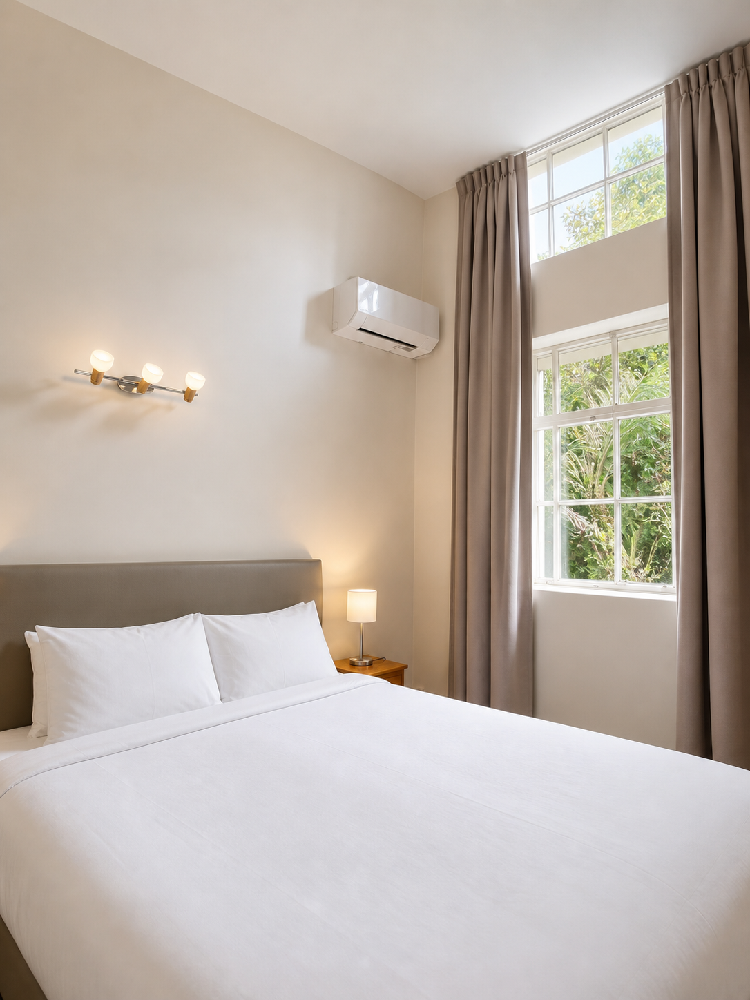
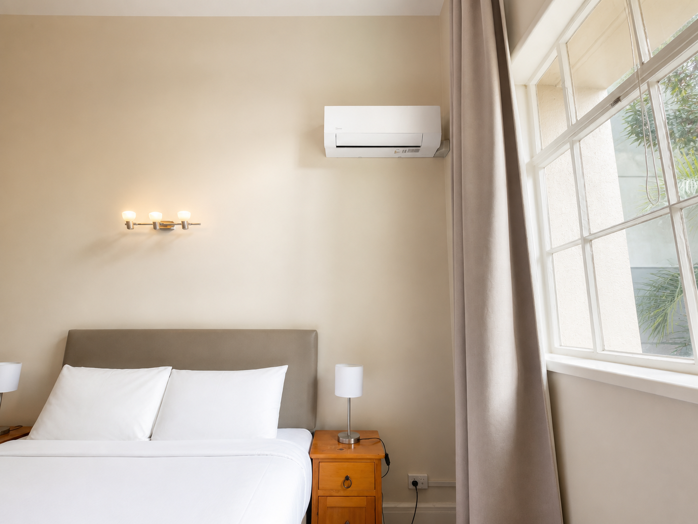
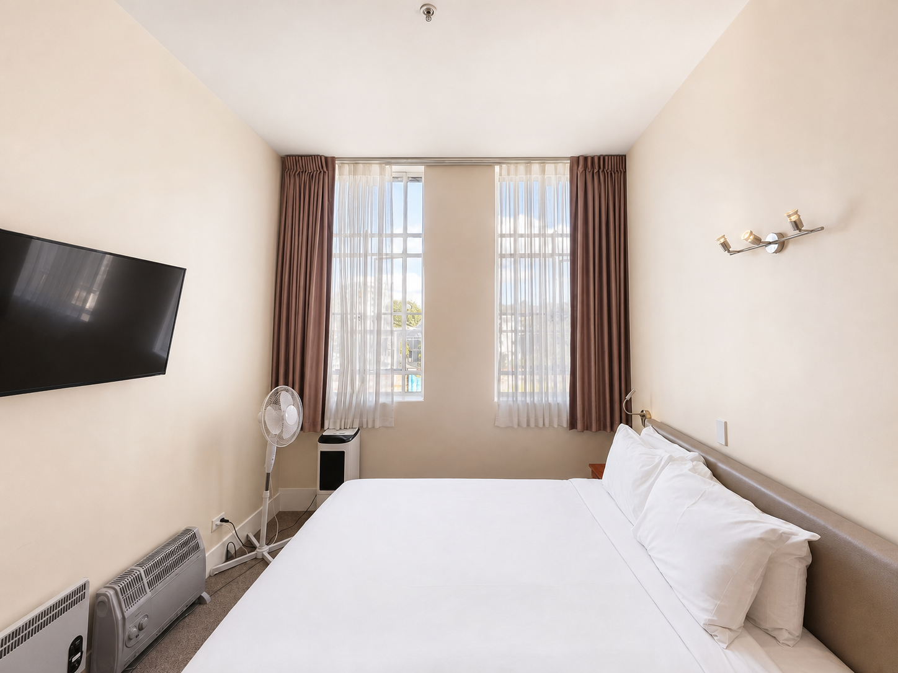
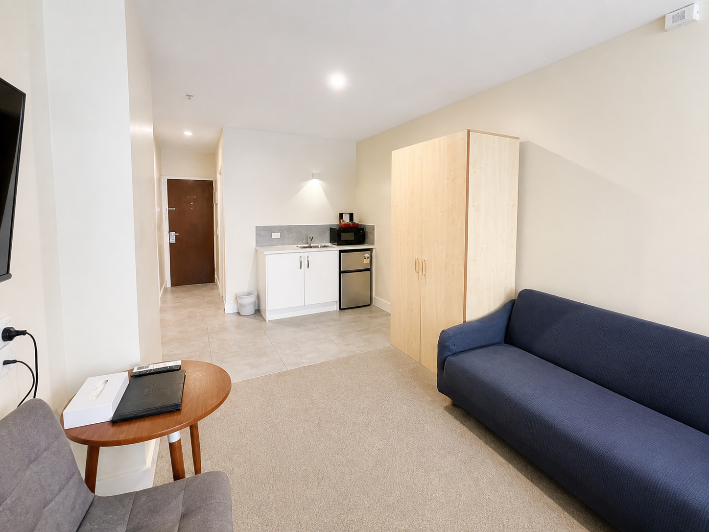
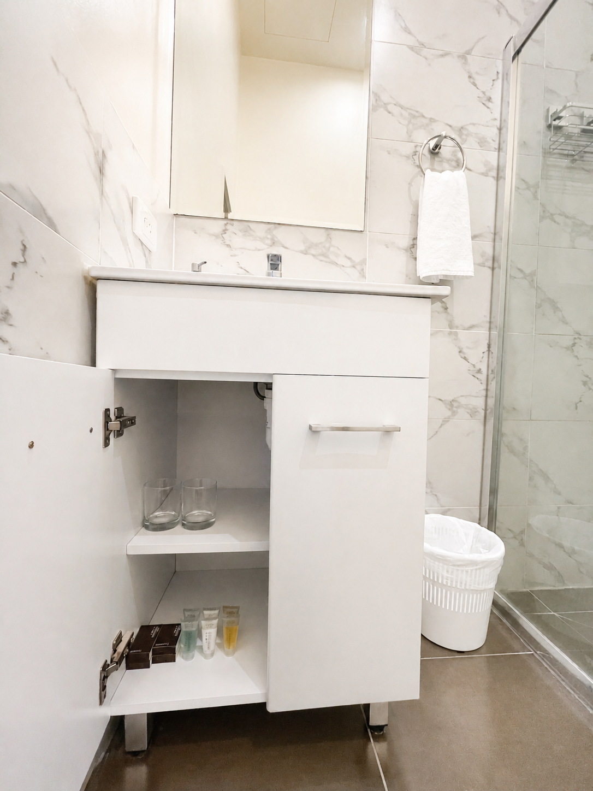
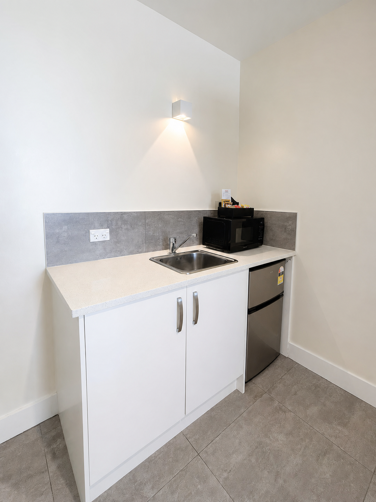

Private room · Maximum 2 guests
Deluxe King
A king bed and more room to settle in, with a workspace and fridge for guests staying beyond a single night.
- Bed
- 1 king bed
- Guests
- 2
- View
- Varies by room






Room features
- King bed
- Air conditioning
- Workspace
- Fridge and kitchenette
- Private bathroom
- Flat-screen television
- Free Wi-Fi
Questions
How many guests can stay?
The Deluxe King accommodates up to two guests.
Can I work from the room?
This category includes room to work. Confirm desk details with the front desk if required.
Book direct
Ready to stay?
Check your dates or call the front desk with questions.